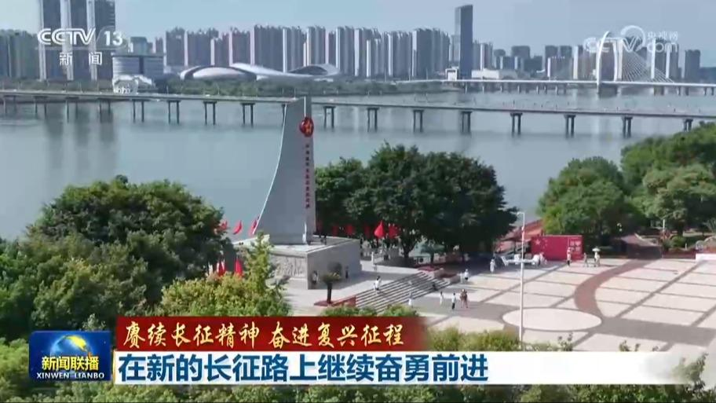
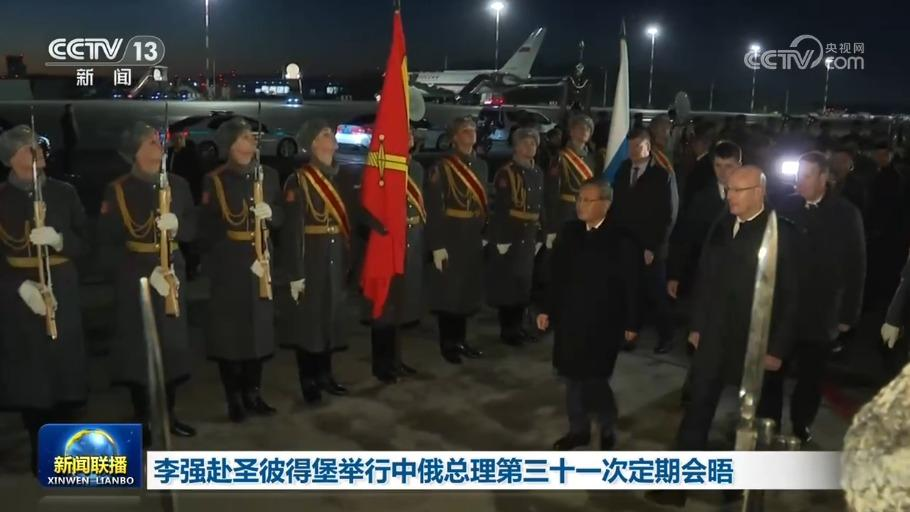
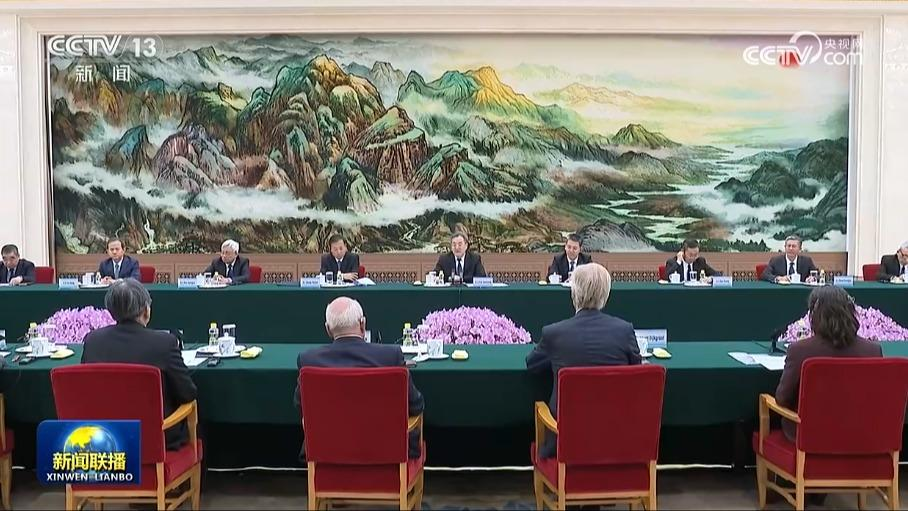
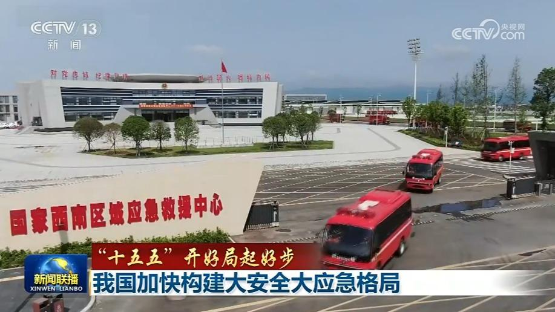
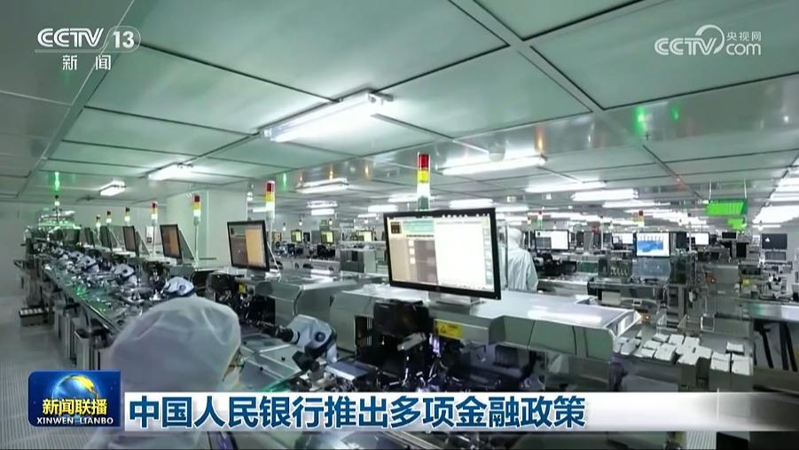
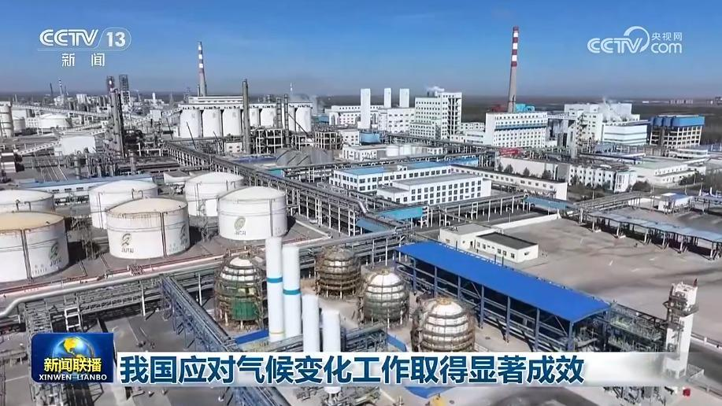
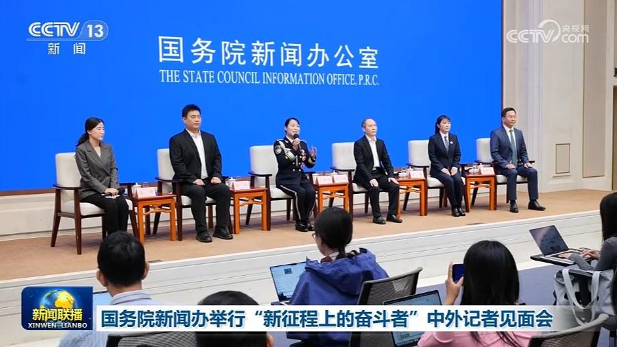

01

【赓续长征精神 奋进复兴征程】在新的长征路上继续奋勇前进
今年是中国工农红军长征胜利90周年。习近平总书记指出，伟大长征精神，作为中国共产党人红色基因和精神族谱的重要组成部分，已经深深融入中华民族的血脉和灵魂，成为社会主义核心价值观的丰富滋养，成为鼓舞和激励中国人民不断攻坚克难、从胜利走向胜利的强大精神动力。站在“十五五”新起点上，亿万中华儿女牢记总书记嘱托，大力弘扬伟大长征精神，齐心协力走好新的长征路，奋力谱写中国式现代化崭新篇章。


今年是中国工农红军长征胜利90周年。习近平总书记指出，伟大长征精神，作为中国共产党人红色基因和精神族谱的重要组成部分，已经深深融入中华民族的血脉和灵魂，成为社会主义核心价值观的丰富滋养，成为鼓舞和激励中国人民不断攻坚克难、从胜利走向胜利的强大精神动力。站在“十五五”新起点上，亿万中华儿女牢记总书记嘱托，大力弘扬伟大长征精神，齐心协力走好新的长征路，奋力谱写中国式现代化崭新篇章。
明天（10月22日）出版的《人民日报》将发表社论，题目是《齐心协力走好新的长征路——纪念中国工农红军长征胜利90周年》。
明天（10月22日）出版的《人民日报》将发表任仲平文章，题目是《在新长征路上阔步前行——写在长征胜利90周年之际》。
本台今天（10月21日）播发央视快评《不忘初心 走好新的长征路》。

当地时间10月20日晚，应俄罗斯总理米舒斯京邀请，国务院总理李强乘包机抵达圣彼得堡普尔科沃机场，将举行中俄总理第三十一次定期会晤。
当地时间10月21日上午，国务院总理李强在圣彼得堡同俄罗斯总理米舒斯京共同主持中俄总理第三十一次定期会晤。

中共中央政治局常委、国务院副总理丁薛祥21日在北京会见2026年国际科学理事会中期会员大会暨北京科学对话部分外宾。

国务院新闻办公室今天（10月21日）举行“开局起步‘十五五’”系列主题新闻发布会，应急管理部等部门有关负责人介绍推进国家应急管理体系和能力现代化建设有关情况。
前三季度，我国消费市场继续扩容。商品和服务供给不断优化，新业态新场景持续涌现，消费潜力进一步释放。
记者从国家发展改革委了解到，今年以来，我国新动能加速成长，对经济带动作用不断增强。

在2026金融街论坛年会上，中国人民银行宣布将推动出台一系列政策措施，更好服务实体经济高质量发展和金融高水平开放。

国务院新闻办公室今天（10月21日）举行新闻发布会，会上发布了《中国应对气候变化的政策与行动2026年度报告》。报告显示，我国应对气候变化成效显著。

国务院新闻办公室今天（10月21日）举行“新征程上的奋斗者”中外记者见面会。5位司法行政领域代表围绕“扎根司法行政一线，服务更高水平平安中国、法治中国建设”主题，分享在基层一线推进行政执法监督、开展禁毒宣传、做好公共法律服务等实践感悟。展现广大司法行政人员在新时代新征程上恪尽职守，持续为更高水平平安中国、法治中国建设贡献力量的使命担当和风采。
城乡历史文化保护“十五五”规划印发
19日晚和20日晚，日本民众连续两天在国会前举行集会，反对高市政权扩军修宪动向，呼吁维护和平。集会参加者表示，日本应正视二战侵略历史，避免重蹈覆辙。
20日，美国总统特使威特科夫和乌克兰总统泽连斯基在挪威奥斯陆就乌克兰问题举行会谈，参会者还包括挪威、芬兰等欧洲国家领导人及欧盟、北约代表。美国媒体援引美国官员的话报道说，会谈取得了“实质性进展”，讨论涉及全面和平框架的关键要素，包括对乌克兰的安全保障、冲突结束后的经济计划以及更广泛的欧洲安全架构。
伊朗总统会见巴陆军参谋长讨论地区局势